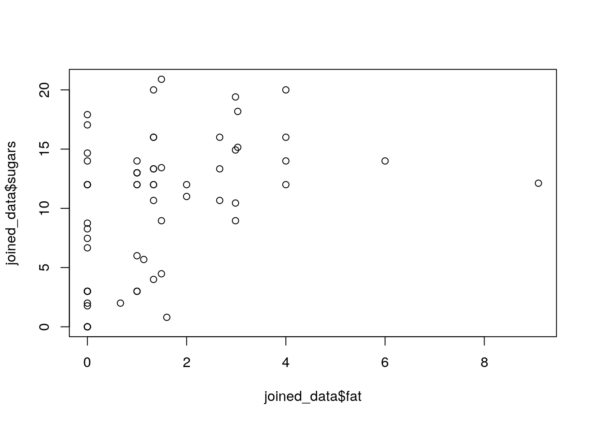
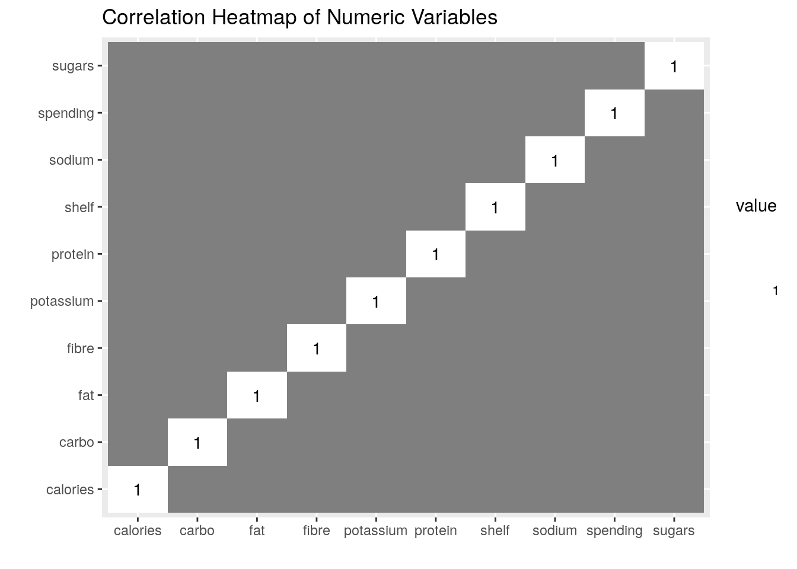
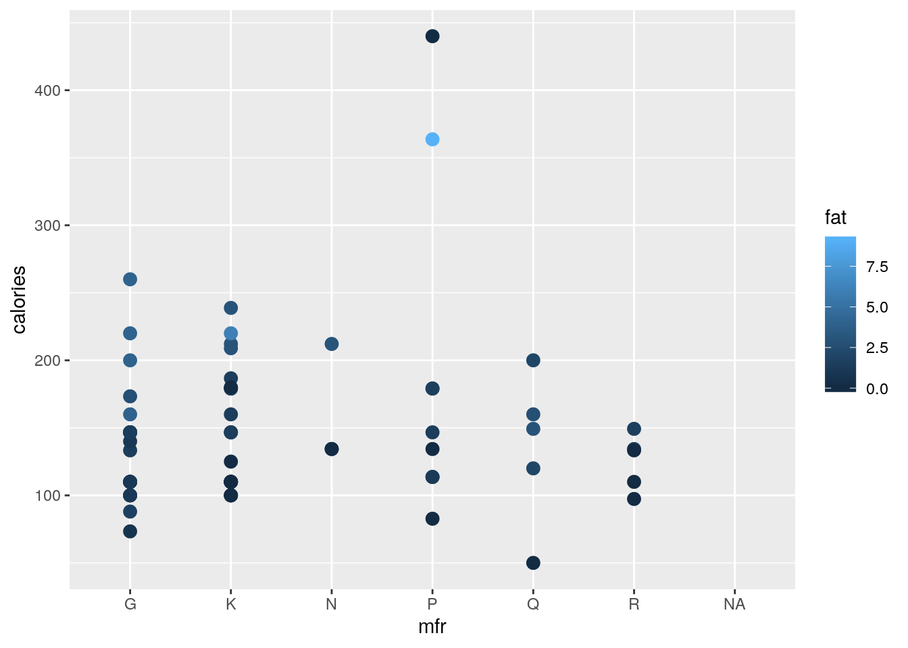
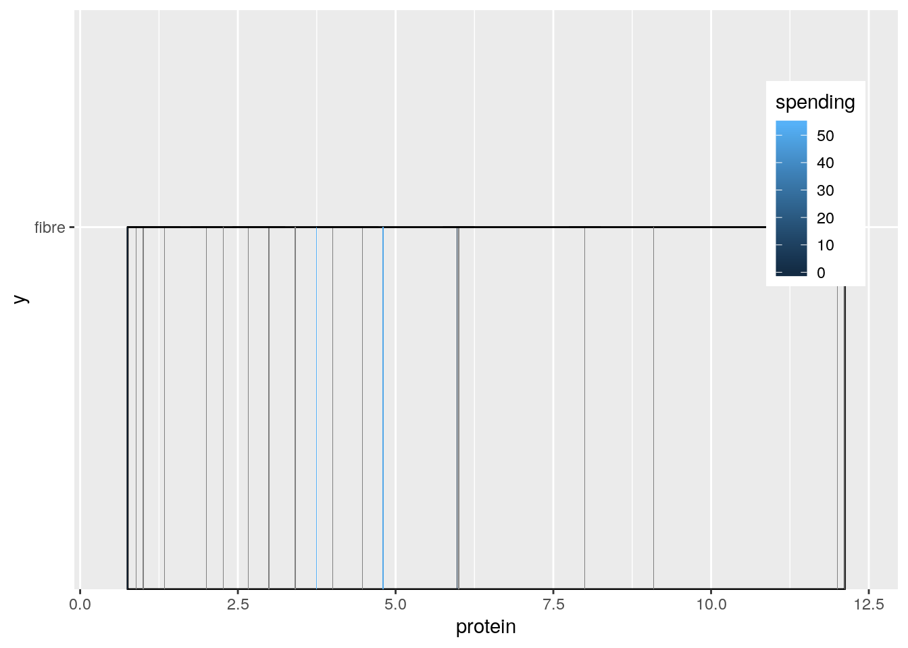
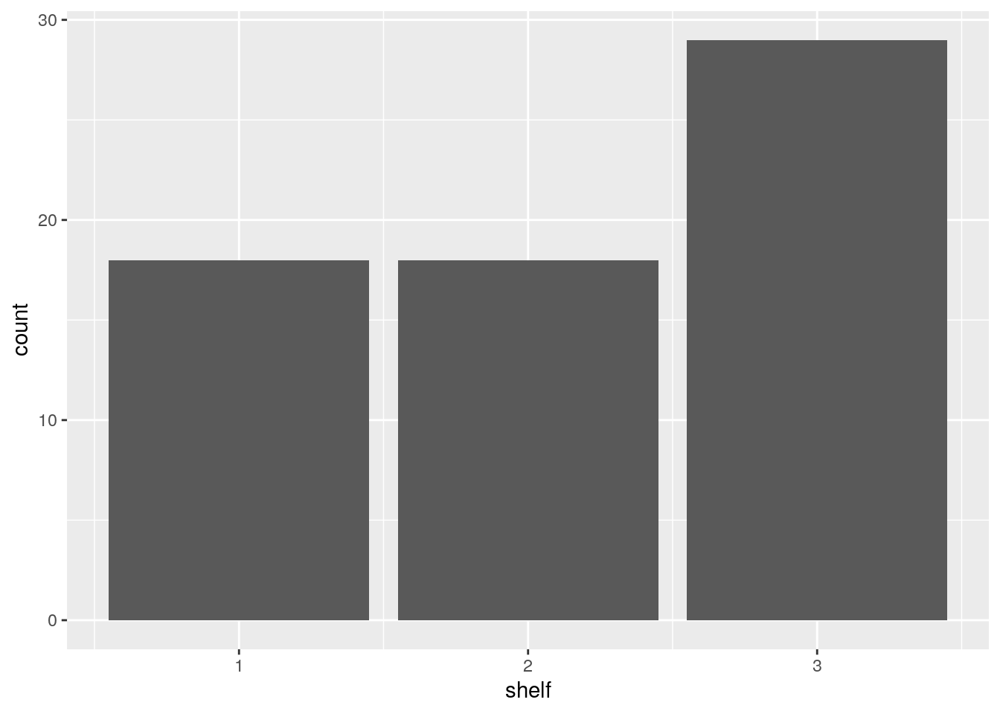
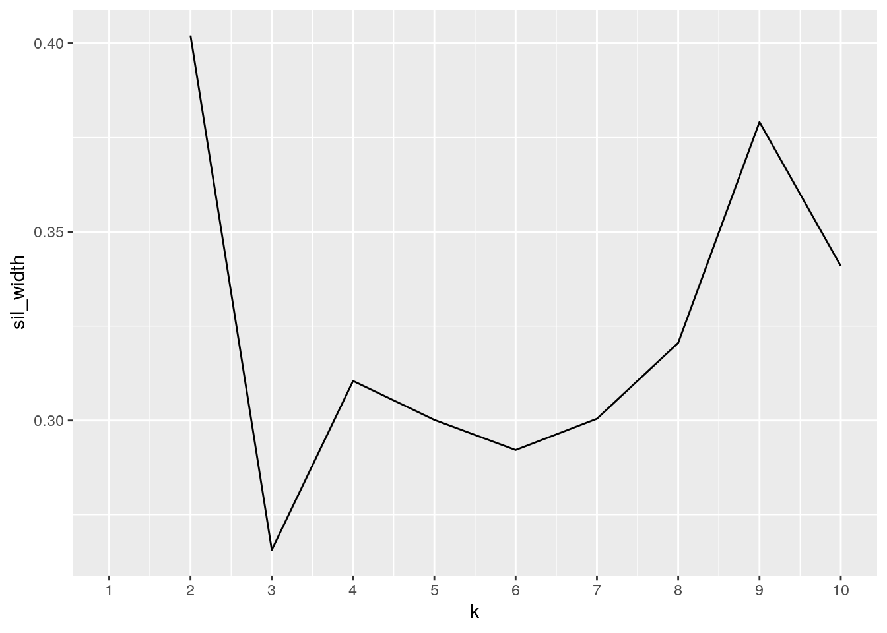
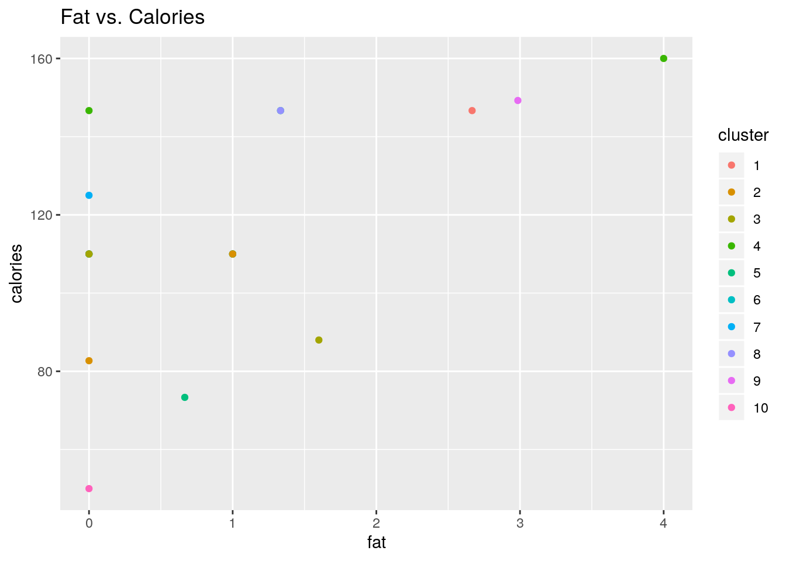
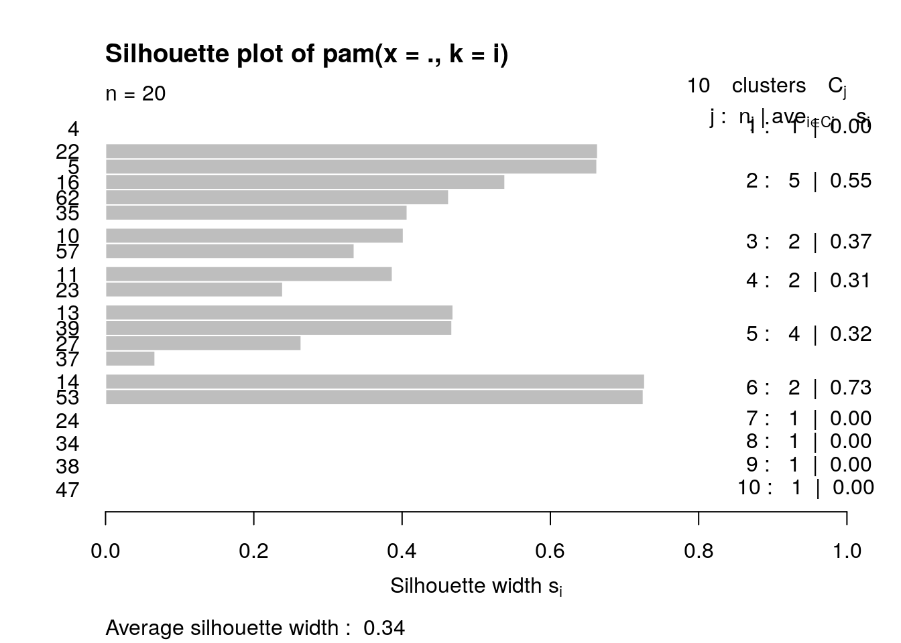
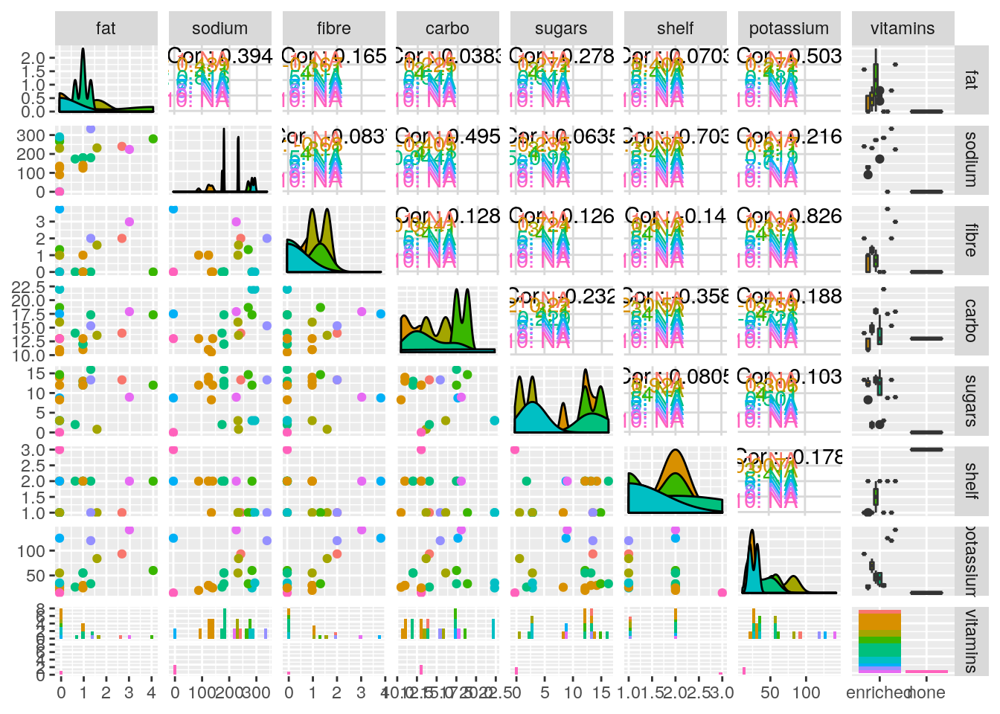

# Data sets Data set #1: Nutritional and Marketing
# Information on US Cereals
UScereal <- read.csv("UScereal.csv")
glimpse(UScereal)## Observations: 65
## Variables: 12
## $ brand <fct> 100% Bran, All-Bran, All-Bran with Extra Fiber, Apple Cinna…
## $ mfr <fct> N, K, K, G, K, G, R, P, Q, G, G, G, G, R, K, K, G, K, K, G,…
## $ calories <dbl> 212.1212, 212.1212, 100.0000, 146.6667, 110.0000, 173.3333,…
## $ protein <dbl> 12.121212, 12.121212, 8.000000, 2.666667, 2.000000, 4.00000…
## $ fat <dbl> 3.030303, 3.030303, 0.000000, 2.666667, 0.000000, 2.666667,…
## $ sodium <dbl> 393.9394, 787.8788, 280.0000, 240.0000, 125.0000, 280.0000,…
## $ fibre <dbl> 30.303030, 27.272727, 28.000000, 2.000000, 1.000000, 2.6666…
## $ carbo <dbl> 15.15152, 21.21212, 16.00000, 14.00000, 11.00000, 24.00000,…
## $ sugars <dbl> 18.181818, 15.151515, 0.000000, 13.333333, 14.000000, 10.66…
## $ shelf <int> 3, 3, 3, 1, 2, 3, 1, 3, 2, 1, 2, 3, 2, 1, 1, 2, 2, 3, 3, 3,…
## $ potassium <dbl> 848.48485, 969.69697, 660.00000, 93.33333, 30.00000, 133.33…
## $ vitamins <fct> enriched, enriched, enriched, enriched, enriched, enriched,…# Data set #2: 2011 Advertising Spending for Cereal Brands
adv_spending <- read.csv("adv_spending.csv")
glimpse(adv_spending)## Observations: 25
## Variables: 2
## $ brand <fct> Honey Nut Cheerios, Frosted Mini-Wheats, Cheerios, Frosted F…
## $ spending <dbl> 73.7, 53.9, 49.9, 40.6, 35.7, 29.0, 24.5, 19.0, 13.6, 12.6, …For this project, I obtained my first dataset from the website https://vincentarelbundock.github.io/Rdatasets/datasets.html. It contains 12 variables, including brand, manufacturer represented by its first initial: G=General Mills, K=Kelloggs, N=Nabisco, P=Post, Q=Quaker Oats, R=Ralston Purina, calories, fat (g), protein (g), sodium (mg), fiber (g), carbohydrates (g), sugar (g), potassium (g), all in one portion, vitamins (none, enriched, or 100%), and shelf (1, 2, or 3, counting from the floor). My second dataset came from http://www.cerealfacts.org/media/Marketing_Rankings/Advertising_Spending.pdf. I had to input the data on an excel sheet and save it as a csv file. It only has 2 variables: brand and advertising spending for 2011 in millions of dollars. I chose these datasets to analyze and compare because I am applying to graduate school for marketing, and I am interested in finding out if there is a correlation between the overall nutrition of a certain cereal and the amount spent on its advertising.
# Tidying / Joining
library(tidyverse)
joined_data <- full_join(UScereal, adv_spending)
head(joined_data)## brand mfr calories protein fat sodium fibre
## 1 100% Bran N 212.1212 12.121212 3.030303 393.9394 30.303030
## 2 All-Bran K 212.1212 12.121212 3.030303 787.8788 27.272727
## 3 All-Bran with Extra Fiber K 100.0000 8.000000 0.000000 280.0000 28.000000
## 4 Apple Cinnamon Cheerios G 146.6667 2.666667 2.666667 240.0000 2.000000
## 5 Apple Jacks K 110.0000 2.000000 0.000000 125.0000 1.000000
## 6 Basic 4 G 173.3333 4.000000 2.666667 280.0000 2.666667
## carbo sugars shelf potassium vitamins spending
## 1 15.15152 18.18182 3 848.48485 enriched NA
## 2 21.21212 15.15151 3 969.69697 enriched NA
## 3 16.00000 0.00000 3 660.00000 enriched NA
## 4 14.00000 13.33333 1 93.33333 enriched 34.8
## 5 11.00000 14.00000 2 30.00000 enriched 4.9
## 6 24.00000 10.66667 3 133.33333 enriched NAjoined_wide <- joined_data %>% pivot_wider(names_from = "mfr",
values_from = "calories") %>% glimpse()## Observations: 70
## Variables: 18
## $ brand <chr> "100% Bran", "All-Bran", "All-Bran with Extra Fiber", "Appl…
## $ protein <dbl> 12.121212, 12.121212, 8.000000, 2.666667, 2.000000, 4.00000…
## $ fat <dbl> 3.030303, 3.030303, 0.000000, 2.666667, 0.000000, 2.666667,…
## $ sodium <dbl> 393.9394, 787.8788, 280.0000, 240.0000, 125.0000, 280.0000,…
## $ fibre <dbl> 30.303030, 27.272727, 28.000000, 2.000000, 1.000000, 2.6666…
## $ carbo <dbl> 15.15152, 21.21212, 16.00000, 14.00000, 11.00000, 24.00000,…
## $ sugars <dbl> 18.181818, 15.151515, 0.000000, 13.333333, 14.000000, 10.66…
## $ shelf <int> 3, 3, 3, 1, 2, 3, 1, 3, 2, 1, 2, 3, 2, 1, 1, 2, 2, 3, 3, 3,…
## $ potassium <dbl> 848.48485, 969.69697, 660.00000, 93.33333, 30.00000, 133.33…
## $ vitamins <fct> enriched, enriched, enriched, enriched, enriched, enriched,…
## $ spending <dbl> NA, NA, NA, 34.8, 4.9, NA, NA, NA, NA, 49.9, 29.0, NA, 7.1,…
## $ N <dbl> 212.1212, NA, NA, NA, NA, NA, NA, NA, NA, NA, NA, NA, NA, N…
## $ K <dbl> NA, 212.1212, 100.0000, NA, 110.0000, NA, NA, NA, NA, NA, N…
## $ G <dbl> NA, NA, NA, 146.6667, NA, 173.3333, NA, NA, NA, 88.0000, 16…
## $ R <dbl> NA, NA, NA, NA, NA, NA, 134.3284, NA, NA, NA, NA, NA, NA, 1…
## $ P <dbl> NA, NA, NA, NA, NA, NA, NA, 134.3284, NA, NA, NA, NA, NA, N…
## $ Q <dbl> NA, NA, NA, NA, NA, NA, NA, NA, 160, NA, NA, NA, NA, NA, NA…
## $ `NA` <dbl> NA, NA, NA, NA, NA, NA, NA, NA, NA, NA, NA, NA, NA, NA, NA,…joined_long <- joined_wide %>% pivot_longer(c("N", "K", "G",
"P", "Q", "R"), names_to = "mfr", values_to = "calories",
values_drop_na = T) %>% glimpse()## Observations: 65
## Variables: 14
## $ brand <chr> "100% Bran", "All-Bran", "All-Bran with Extra Fiber", "Appl…
## $ protein <dbl> 12.121212, 12.121212, 8.000000, 2.666667, 2.000000, 4.00000…
## $ fat <dbl> 3.030303, 3.030303, 0.000000, 2.666667, 0.000000, 2.666667,…
## $ sodium <dbl> 393.9394, 787.8788, 280.0000, 240.0000, 125.0000, 280.0000,…
## $ fibre <dbl> 30.303030, 27.272727, 28.000000, 2.000000, 1.000000, 2.6666…
## $ carbo <dbl> 15.15152, 21.21212, 16.00000, 14.00000, 11.00000, 24.00000,…
## $ sugars <dbl> 18.181818, 15.151515, 0.000000, 13.333333, 14.000000, 10.66…
## $ shelf <int> 3, 3, 3, 1, 2, 3, 1, 3, 2, 1, 2, 3, 2, 1, 1, 2, 2, 3, 3, 3,…
## $ potassium <dbl> 848.48485, 969.69697, 660.00000, 93.33333, 30.00000, 133.33…
## $ vitamins <fct> enriched, enriched, enriched, enriched, enriched, enriched,…
## $ spending <dbl> NA, NA, NA, 34.8, 4.9, NA, NA, NA, NA, 49.9, 29.0, NA, 7.1,…
## $ `NA` <dbl> NA, NA, NA, NA, NA, NA, NA, NA, NA, NA, NA, NA, NA, NA, NA,…
## $ mfr <chr> "N", "K", "K", "G", "K", "G", "R", "P", "Q", "G", "G", "G",…
## $ calories <dbl> 212.1212, 212.1212, 100.0000, 146.6667, 110.0000, 173.3333,…My datasets were already tidy, so I pivoted wider by making manufacturer columns with their corresponding calories per portion and then proceeded to pivot longer to condense the these columns into one column called “mfr”, which made my data much easier to read. I included values_drop_na=T when I pivoted longer in order demonstrate that I can omit the NAs, but there were not any to begin with. I did a full join with the common variable “brand”, as I wanted to keep all the variables in both datasets.
# Wrangling
# selecting only to variables to display
joined_data %>% select(vitamins, sugars)## vitamins sugars
## 1 enriched 18.181818
## 2 enriched 15.151515
## 3 enriched 0.000000
## 4 enriched 13.333333
## 5 enriched 14.000000
## 6 enriched 10.666667
## 7 enriched 8.955224
## 8 enriched 7.462687
## 9 enriched 16.000000
## 10 enriched 0.800000
## 11 enriched 12.000000
## 12 enriched 14.000000
## 13 enriched 13.000000
## 14 enriched 3.000000
## 15 enriched 2.000000
## 16 enriched 12.000000
## 17 enriched 13.000000
## 18 enriched 14.000000
## 19 enriched 3.000000
## 20 enriched 13.333333
## 21 enriched 6.666667
## 22 enriched 13.000000
## 23 enriched 14.666667
## 24 enriched 8.750000
## 25 enriched 14.925373
## 26 enriched 17.910448
## 27 enriched 16.000000
## 28 enriched 17.045455
## 29 enriched 12.000000
## 30 enriched 5.681818
## 31 enriched 12.000000
## 32 enriched 12.121212
## 33 enriched 11.000000
## 34 enriched 13.333333
## 35 enriched 8.270677
## 36 100% 12.000000
## 37 enriched 2.000000
## 38 enriched 8.955224
## 39 enriched 12.000000
## 40 enriched 19.402985
## 41 enriched 6.000000
## 42 enriched 13.432836
## 43 enriched 10.447761
## 44 enriched 20.000000
## 45 enriched 20.895522
## 46 100% 3.000000
## 47 none 0.000000
## 48 enriched 12.000000
## 49 enriched 16.000000
## 50 enriched 16.000000
## [ reached getOption("max.print") -- omitted 20 rows ]# shows the mean calories for cereals in each shelf
joined_data %>% group_by(shelf) %>% summarize(mean_cal = mean(calories))## # A tibble: 4 x 2
## shelf mean_cal
## <int> <dbl>
## 1 1 119.
## 2 2 130.
## 3 3 180.
## 4 NA NA# returns cereals in descending advertising spending for
# caloric values 300-400
joined_data %>% filter(between(calories, 300, 400)) %>% arrange(desc(spending))## brand mfr calories protein fat sodium fibre carbo
## 1 Great Grains Pecan P 363.6364 9.090909 9.090909 227.2727 9.090909 39.39394
## sugars shelf potassium vitamins spending
## 1 12.12121 3 303.0303 enriched NA# converted sodium per portion from milligrams to grams and
# created a new variable
joined_data %>% mutate(sodium_g = (sodium * 1000))## brand mfr calories protein fat
## 1 100% Bran N 212.12121 12.1212121 3.0303030
## 2 All-Bran K 212.12121 12.1212121 3.0303030
## 3 All-Bran with Extra Fiber K 100.00000 8.0000000 0.0000000
## 4 Apple Cinnamon Cheerios G 146.66667 2.6666667 2.6666667
## 5 Apple Jacks K 110.00000 2.0000000 0.0000000
## 6 Basic 4 G 173.33333 4.0000000 2.6666667
## 7 Bran Chex R 134.32836 2.9850746 1.4925373
## sodium fibre carbo sugars shelf potassium vitamins spending
## 1 393.93939 30.303030 15.15152 18.181818 3 848.48485 enriched NA
## 2 787.87879 27.272727 21.21212 15.151515 3 969.69697 enriched NA
## 3 280.00000 28.000000 16.00000 0.000000 3 660.00000 enriched NA
## 4 240.00000 2.000000 14.00000 13.333333 1 93.33333 enriched 34.8
## 5 125.00000 1.000000 11.00000 14.000000 2 30.00000 enriched 4.9
## 6 280.00000 2.666667 24.00000 10.666667 3 133.33333 enriched NA
## 7 298.50746 5.970149 22.38806 8.955224 1 186.56716 enriched NA
## sodium_g
## 1 393939.39
## 2 787878.79
## 3 280000.00
## 4 240000.00
## 5 125000.00
## 6 280000.00
## 7 298507.46
## [ reached getOption("max.print") -- omitted 63 rows ]# counting the number of unique values in each variable
joined_data %>% summarize_all(n_distinct)## brand mfr calories protein fat sodium fibre carbo sugars shelf potassium
## 1 70 7 29 21 15 42 24 41 34 4 51
## vitamins spending
## 1 4 21# shows the mean, sd, and var of calories for Kelloggs
joined_data %>% filter(mfr == "K") %>% summarize(mean_cal = mean(calories),
sd_cal = sd(calories), var_cal = var(calories))## mean_cal sd_cal var_cal
## 1 149.671 45.77379 2095.24# shows the mean, sd, and var of fat per portion for Kelloggs
joined_data %>% filter(mfr == "K") %>% summarize(mean_fat = mean(fat),
sd_fat = sd(fat), var_fat = var(fat))## mean_fat sd_fat var_fat
## 1 1.023476 1.574286 2.478376# shows the mean, sd, and var of sodium per portion for
# Kelloggs
joined_data %>% filter(mfr == "K") %>% summarize(mean_sod = mean(sodium),
sd_sod = sd(sodium), var_sod = var(sodium))## mean_sod sd_sod var_sod
## 1 242.7893 162.3573 26359.88# shows the mean, sd, and var of fibre per portion for
# Kelloggs
joined_data %>% filter(mfr == "K") %>% summarize(mean_fib = mean(fibre),
sd_fib = sd(fibre), var_fib = var(fibre))## mean_fib sd_fib var_fib
## 1 5.068602 7.874833 62.01299# shows the mean, sd, and var of carbohydrates per portion
# for Kelloggs
joined_data %>% filter(mfr == "K") %>% summarize(mean_carb = mean(carbo),
sd_carb = sd(carbo), var_carb = var(carbo))## mean_carb sd_carb var_carb
## 1 19.79582 5.620894 31.59445# shows the mean, sd, and var of sugars per portion for
# Kelloggs when advertising spending is greater that $10
# million for the cereal
joined_data %>% filter(mfr == "K", "spending" > 10) %>% summarize(mean_sug = mean(sugars),
sd_sug = sd(sugars), var_sug = var(sugars))## mean_sug sd_sug var_sug
## 1 10.7982 6.117495 37.42375# shows the mean, sd, and var of potassium per portion for
# Kelloggs
joined_data %>% filter(mfr == "K") %>% summarize(mean_pot = mean(potassium),
sd_pot = sd(potassium), var_pot = var(potassium))## mean_pot sd_pot var_pot
## 1 184.9595 238.284 56779.29# shows all summary statistics for protein per portion
joined_data %>% summarize(mean_prot = mean(protein), var_prot = var(protein),
max_prot = max(protein), min_prot = min(protein), n_dist_prot = n_distinct(protein),
cor_prot = cor(shelf, protein), median_prot = median(protein),
mad_prot = mad(protein))## mean_prot var_prot max_prot min_prot n_dist_prot cor_prot median_prot
## 1 NA NA NA NA 21 NA NA
## mad_prot
## 1 NAcor(joined_data$fat, joined_data$sugars)## [1] NAplot(joined_data$fat, joined_data$sugars) I have quite a few numeric variables, so I only summarized a few of them while selecting for other variables. I computed all the dplyr functions as well as all the summary statistics. Additionally, I created a correlation matrix for sugar and fat per cereal portion, which appears to have no significant correlation, which I expected.
# Visualization
# Correlation heatmap
library(ggplot2)
joined_data %>% select_if(is.numeric) %>% cor %>% as.data.frame %>%
rownames_to_column %>% pivot_longer(-1) %>% ggplot(aes(rowname,
name, fill = value)) + geom_tile() + geom_text(aes(label = round(value,
2))) + xlab("") + ylab("") + scale_fill_gradient2(low = "red",
high = "blue") + ggtitle("Correlation Heatmap of Numeric Variables")
ggplot(data = joined_data, aes(x = mfr, y = calories, color = fat)) +
geom_point(size = 3)
# this graph shows that as fat content gets higher, so does
# the amount of calories per portion
ggplot(joined_data, aes(x = protein, y = "fibre", fill = spending)) +
theme(legend.position = c(0.9, 0.7)) + geom_density(alpha = 0.75) +
geom_bar(stat = "summary", fun.y = "mean") + geom_errorbar(stat = "summary",
width = 0.5)
# this plot shows absolutely no relation between protein and
# advertising spending, which I did not expect because I feel
# like cereal companies would want to advertise the higher
# protein levels per serving in their product
ggplot(joined_data, aes(x = shelf, fill = spending)) + geom_bar()
# this shows that companies are spending a lot more to have
# their cereals displayed higher up form the ground# Clustering
install.packages("cluster")
library(cluster)
library(tidyverse)
joined_data <- na.omit(joined_data)
pam_data <- joined_data %>% select(-spending, -vitamins, -shelf,
-mfr, -brand) %>% pam(3)
sil_width <- vector()
for (i in 2:10) {
pam_fit <- joined_data %>% select(-spending, -vitamins, -shelf,
-mfr, -brand) %>% pam(i)
sil_width[i] <- pam_fit$silinfo$avg.width
}
ggplot() + geom_line(aes(x = 1:10, y = sil_width)) + scale_x_continuous(name = "k",
breaks = 1:10)
clust <- joined_data %>% mutate(cluster = as.factor(pam_fit$clustering))
cmatrix <- clust %>% group_by(spending, vitamins, shelf, mfr,
brand) %>% count(cluster) %>% arrange(desc(n)) %>% pivot_wider(names_from = "cluster",
values_from = "n", values_fill = list(n = 0))
cmatrix## # A tibble: 20 x 15
## # Groups: spending, vitamins, shelf, mfr, brand [325]
## spending vitamins shelf mfr brand `2` `5` `9` `10` `6` `3` `4`
## <dbl> <fct> <int> <fct> <chr> <int> <int> <int> <int> <int> <int> <int>
## 1 0 enriched 1 P Hone… 1 0 0 0 0 0 0
## 2 0.1 enriched 2 G Kix 0 1 0 0 0 0 0
## 3 0.1 enriched 2 Q Life 0 0 1 0 0 0 0
## 4 0.5 none 3 Q Puff… 0 0 0 1 0 0 0
## 5 2.7 enriched 2 K Corn… 1 0 0 0 0 0 0
## 6 4.9 enriched 2 K Appl… 1 0 0 0 0 0 0
## 7 7.1 enriched 2 G Coco… 0 1 0 0 0 0 0
## 8 7.9 enriched 2 G Trix 1 0 0 0 0 0 0
## 9 12.6 enriched 2 G Luck… 0 1 0 0 0 0 0
## 10 13.6 enriched 2 P Frui… 0 1 0 0 0 0 0
## 11 19 enriched 1 R Corn… 0 0 0 0 1 0 0
## 12 24.5 enriched 1 K Rice… 0 0 0 0 1 0 0
## 13 24.5 enriched 1 K Spec… 0 0 0 0 0 1 0
## 14 29 enriched 2 G Cinn… 0 0 0 0 0 0 1
## 15 34.8 enriched 1 G Appl… 0 0 0 0 0 0 0
## 16 35.7 enriched 2 K Froo… 1 0 0 0 0 0 0
## 17 40.6 enriched 1 K Fros… 0 0 0 0 0 0 1
## 18 49.9 enriched 1 G Chee… 0 0 0 0 0 1 0
## 19 53.9 enriched 2 K Fros… 0 0 0 0 0 0 0
## 20 73.7 enriched 1 G Hone… 0 0 0 0 0 0 0
## # … with 3 more variables: `1` <int>, `7` <int>, `8` <int>ggplot(clust, aes(x = fat, y = calories, color = cluster)) +
ggtitle("Fat vs. Calories") + geom_point()
plot(pam_fit, which = 2)
library(GGally)
ggpairs(clust, columns = 5:12, aes(color = cluster)) My average silhouette width was about 0.35 according to my silhouette plot, making it weak and ppossibly artificial. There is a direct correlation between fat and calories, which makes sense. Also, there was not much correlation between the categorical variables (spending, manufacturer, vitamins). Lastly, I can assume that brands with the most sugary cereals would spend more on advertising than those with less sugary cereals, which I would have predicted assuming sugary cereals are more popular among children.